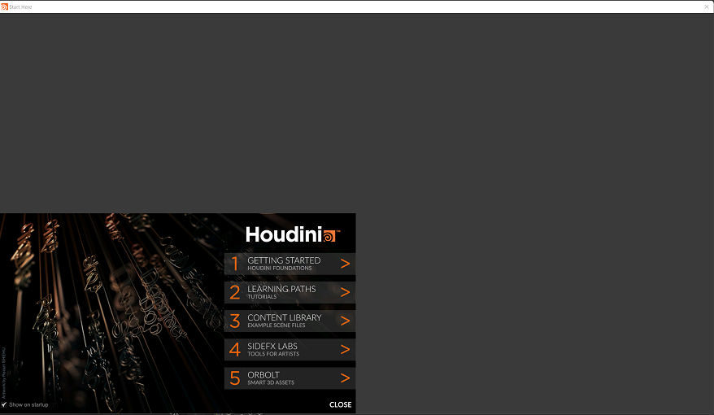
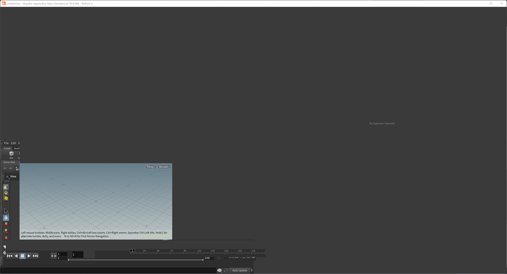
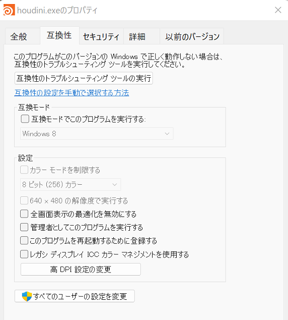
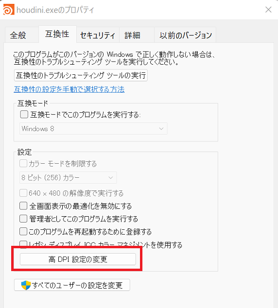
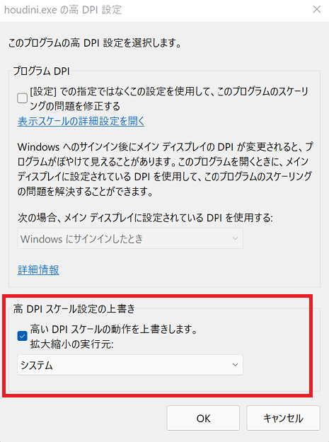
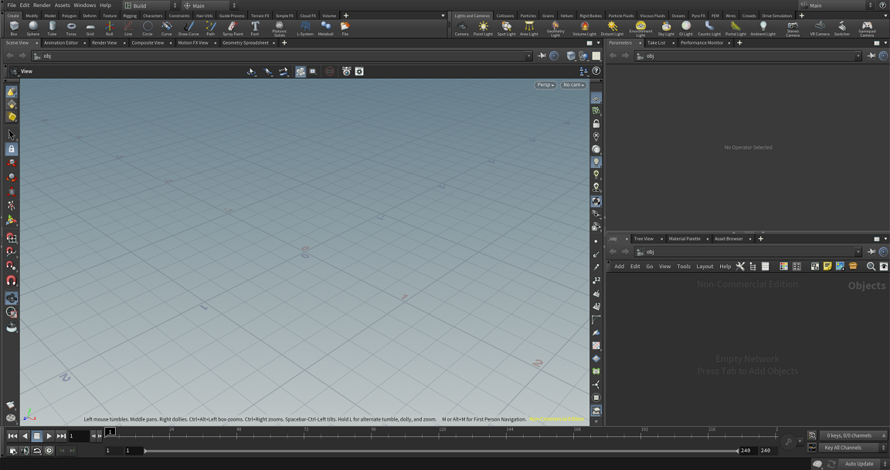

Windows11でHoudiniのUIスケール問題とその解決
問題
ふとHoudiniを触ってみたくなり、Houdini Apprentice 19をインストールした。
インストール完了後、Houdiniを起動したらUIがおかしなかことになっていた。


使用環境
- CPU: AMD Ryzen7 3700
- GPU: AMD Radeon RX 5700
- OS: Windows 11
- ディスプレイ: 4K(3840x2160)
解決方法
ざっくり言うと、Houdiniフォーラムのトピックにある最後の投稿内容を試したところ、解決した。
あと、システム環境変数にある「QT_DEVICE_PIXEL_RATIO」を削除も行ったが、関係あるかはわからない。
トピックの投稿内容は英語で書かれており翻訳すればいいのだが、日本語の記事として残しておきたいので改めて書いておく。
- Houdiniアプリケーションを右クリック
- プロパティを選択
- 互換性タブ選択
 - 「高DPI設定の変更」を選択
 - 下部にある「高DPIスケーリングオーバーライド」ボックスをチェックして、プルダウンメニューから「システム」を選択 
- OKボタンをクリックし、適応ボタンをクリック。Houdiniアプリケーションを起動。UIが正常に表示された。 
解決までの過程
※読んでも読まなくてもよい。
-
まず現在にて、HoudiniのUIの問題について最初に検索で出てきたのは Houdiniを起動した際にUIが正しく表示されない などのIntelのグラフィックを使用している場合の解決方法についての記事。
しかし、現在の使用環境は全く違っていたので、上記記事は関係なかった。
そして、Houdini 19.0 システム環境に該当しているスペックのため問題ない…はず -
とりあえず次にHoudiniのフォーラムで問題解決できそうなトピックを探す。
最初に関連しそうだなと思ったトピックスが、この環境変数が関係あるかどうか、関連しそうな記事をGoogleで検索してみた。
4Kモニタを使用すると、3ds Maxで黒いボックスとビューポートのスケーリングが正しく表示されないという記事が見つかった。
4kディスプレイを使用しているため該当するかと思い、環境変数にある「QT_DEVICE_PIXEL_RATIO」を削除、Windowsを再起動をしてみた。
が、解決ならず。 -
また、Houdiniのトピックを検索し、次に以下のトピックが見つかった。
このトピックの最後の投稿内容が、Houdiniアプリケーションの設定で高DPIについて設定すると解決した、とあった。
そして、自分の環境下ではこの設定が正解だった。